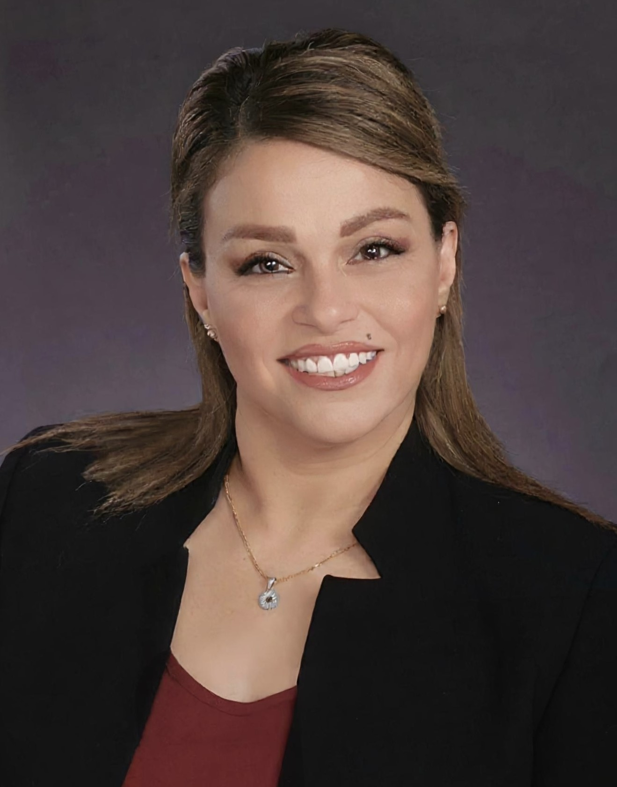
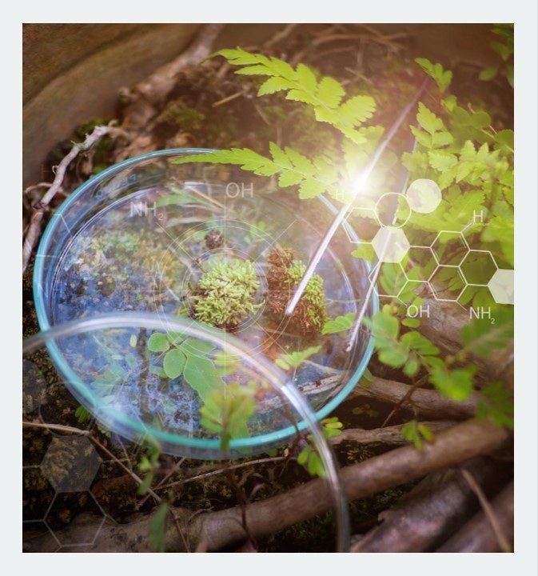

Translational Science & Natural Products
Medicinal plants, natural products, computational screening, docking-based evaluation, and early scientific assessment of bioactive compounds.

I work at the intersection of medicinal plants, natural products, computational evaluation, and research workflow design. My background combines translational scientific research with AI-enabled tools, research integrity, grants support, and clinical research management.
Current focus: translational science, natural product evaluation, scientific screening, and research-support/program operations roles.
Medicinal plants, natural products, computational screening, docking-based evaluation, and early scientific assessment of bioactive compounds.
Research integrity support, AI-enabled workflow tools, grants/compliance-adjacent operations, and structured research decision support.
Prototype tools and workflow systems built across natural products, clinical/research support, and scientific information management.
Natural products and GC-MS support for bioactive libraries, extract-centered workflows, and mass-spectrometry-informed scientific exploration.
LC-MS dataset preparation tool designed to simplify peak data organization into structured bundles for downstream upload and analysis.
Molecular structure generation, functional-group substitution, and visualization workflow for chemical exploration and rapid prototype analysis.
Research integrity and security workflow prototype designed to support compliance-aware documentation, process readiness, and institutional support.
Pre-award and post-award workflow support prototype aligned with research administration, grant support, and process-guided task assistance.
Medical synonym assistant built to improve terminology consistency, synonym harmonization, and structured biomedical communication workflows.
I am a PhD candidate in Pharmaceutical Sciences with work spanning medicinal plants, natural products, translational phytochemistry, computational evaluation of bioactive compounds, and AI-enabled research tools.
My background includes natural product screening, docking-based evaluation, translational science, clinical research management training, research integrity support, and grants/compliance workflow development.
I am especially interested in roles that sit at the intersection of scientific depth, systems thinking, and practical execution — whether in translational science, scientific screening, research support, or AI-enabled operations.

I maintain separate materials for translational science / natural products roles and for research support / program operations roles.